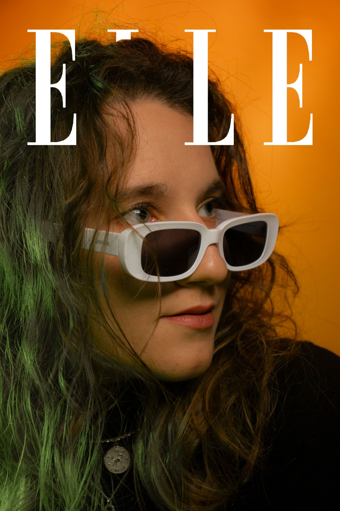

PHOTOGRAPHY:
My passion for photography started when I was a child. I have always enjoyed observing the
details of people and their particularities. In order to be able to experience what my eyes could see,
I started to take pictures of those peculiarities. Later on, I became interested in fashion photography,
cover photography, which is why with these six pictures, which you can find below, I show some of my shots
taken for the most famous and recognised fashion covers in the world.
This is a university job that gave me the opportunity to learn a lot more about photography and gave me space and
creative freedom to experiment with my art.


ILLUSTRATIONS:
An illustration is something more complex, it is a visual element that encapsulates the meaning
of what we are looking at and that, when it can, even goes beyond the written words.
The image is often considered of secondary importance compared to the text, but in reality
it walks hand in hand with it, enhancing explicit or hidden senses.
The illustration, to be defined as such, should be narrative, that is, alone or together with other
plates it must tell a story, it must make you want to ask: What is happening? in order to indissolubly
bind the reader and immerse him or her in new worlds, characterised also by deep feelings.
Behind the creation of an illustration, even the simplest one, there is a great deal of synthesis work.
For me, the basis of illustration is synthesis, this does not mean that the image stylistically must be
synthetic, it can also be rich in descriptive elements, but it synthesises in an image a portion of text,
or a concept of the story we are looking at.